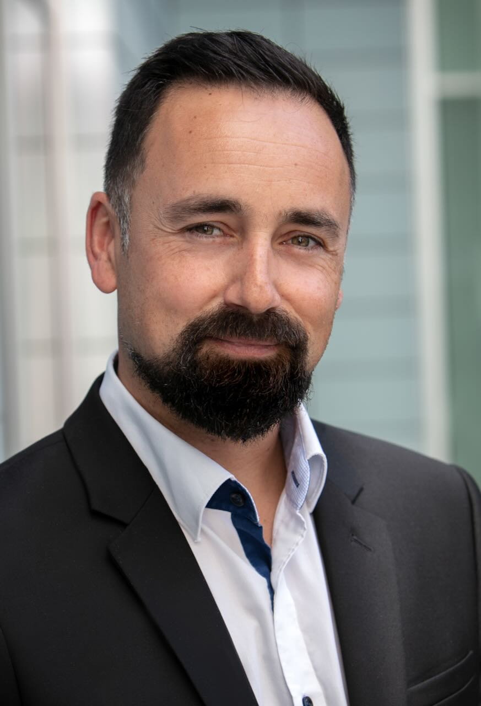

Viktor Tamayo
Jsem komunikační profesionál s více než 15 lety zkušeností v médiích, PR, marketingu a sponzoringu.
Mohu nabídnout zkušenosti s multimediální tvorbou, moderováním, prezentováním, přípravou komunikačních a marketingových kampaní, organizací eventů a s vedením týmů v mezinárodních projektech.
Největší radost mám, když je za mnou odvedená práce vidět.
Sociální sítě
Sledujte mě na sociálních sítích
LinkedIn
Objevte více o mé práci na LinkedIn
X
Aktuálně, osobně a stručně — na X
Instagram
Střípky ze soukromého a pracovního života